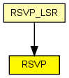

Implements RSVP-TE, a signalling protocol for MPLS. The module processes RSVP-TE messages, installs labels and does the reservation along LSP paths.
Paths can be specified statically in an XML config file ("traffic" parameter), or can be set up and torn down dynamically with ScenarioManager commands.
An example traffic.xml file:
<?xml version="1.0"?>
<sessions>
<session>
<endpoint>host3</endpoint>
<tunnel_id>1</tunnel_id>
<paths>
<path>
<lspid>100</lspid>
<bandwidth>100000</bandwidth>
<route>
<node>10.1.1.1</node>
<lnode>10.1.2.1</lnode>
<node>10.1.4.1</node>
<node>10.1.5.1</node>
</route>
<permanent>true</permanent>
<color>100</color>
</path>
</paths>
</session>
</sessions>
In the route, <node> stands for strict hop, and <lnode> for loose hop.
RSVP understands the "add-session" and "del-session" ScenarioManager commands. The contents of the <add-session> element can be the same as the <session> element for the traffic.xml above. The <del-command> element syntax is also similar, but only <endpoint>, <tunnel_id> and <lspid> needs to be specified.
The following is an example scenario.xml file:
<?xml version="1.0"?>
<scenario>
<at t="2">
<add-session module="LSR1.rsvp">
<endpoint>10.2.1.1</endpoint>
<tunnel_id>1</tunnel_id>
<paths>
...
</paths>
</add-session>
</at>
<at t="2.4">
<del-session module="LSR1.rsvp">
<endpoint>10.2.1.1</endpoint>
<tunnel_id>1</tunnel_id>
<paths>
<path>
<lspid>100</lspid>
</path>
</paths>
</del-session>
</at>
</scenario>
RSVP messages are subclassed from RSVPMessage, and include RSVPPathMsg, RSVPPathTear, RSVPPathError, RSVPResvMsg and RSVPHelloMsg.
RSVP-TE communicates with the following components in the system: TED, MPLS, and may receive commands from ScenarioManager.
The following diagram shows usage relationships between types. Unresolved types are missing from the diagram. Click here to see the full picture.
The following diagram shows inheritance relationships for this type. Unresolved types are missing from the diagram. Click here to see the full picture.
If a module type shows up more than once, that means it has been defined in more than one NED file.
| RSVP_LSR (compound module) |
An RSVP-TE capable router. |
| Name | Type | Default value | Description |
|---|---|---|---|
| traffic | xml |
specifies paths to set up |
|
| peers | string |
names of the interfaces towards RSVP peers |
|
| helloInterval | double | ||
| helloTimeout | double |
| Name | Value | Description |
|---|---|---|
| display | i=block/control |
| Name | Direction | Size | Description |
|---|---|---|---|
| ipIn | input | ||
| ipOut | output | ||
| mplsSwitchIn | input | ||
| appIn | input |
// // Implements \RSVP-TE, a signalling protocol for MPLS. The module // processes \RSVP-TE messages, installs labels and does the reservation // along LSP paths. // // Paths can be specified statically in an XML config file ("traffic" // parameter), or can be set up and torn down dynamically with ScenarioManager // commands. // // An example traffic.xml file: // //# FIXME verify against the code, and document formally (DTD)! //# <setup_pri>, <holding_pri>, <sender>, <owner>, <max_delay> elements //# are implemented but missing from this doc! // // <pre> // <?xml version="1.0"?> // <sessions> // <session> // <endpoint>host3</endpoint> // <tunnel_id>1</tunnel_id> // <paths> // <path> // <lspid>100</lspid> // <bandwidth>100000</bandwidth> // <route> // <node>10.1.1.1</node> // <lnode>10.1.2.1</lnode> // <node>10.1.4.1</node> // <node>10.1.5.1</node> // </route> // <permanent>true</permanent> // <color>100</color> // </path> // </paths> // </session> // </sessions> // </pre> // // In the route, <node> stands for strict hop, and <lnode> for loose hop. // // RSVP understands the "add-session" and "del-session" ScenarioManager // commands. The contents of the <add-session> element can be the same // as the <session> element for the traffic.xml above. // The <del-command> element syntax is also similar, but only // <endpoint>, <tunnel_id> and <lspid> needs to be specified. // // The following is an example scenario.xml file: // // <pre> // <?xml version="1.0"?> // <scenario> // <at t="2"> // <add-session module="LSR1.rsvp"> // <endpoint>10.2.1.1</endpoint> // <tunnel_id>1</tunnel_id> // <paths> // ... // </paths> // </add-session> // </at> // <at t="2.4"> // <del-session module="LSR1.rsvp"> // <endpoint>10.2.1.1</endpoint> // <tunnel_id>1</tunnel_id> // <paths> // <path> // <lspid>100</lspid> // </path> // </paths> // </del-session> // </at> // </scenario> // </pre> // // \RSVP messages are subclassed from RSVPMessage, and include RSVPPathMsg, // RSVPPathTear, RSVPPathError, RSVPResvMsg and RSVPHelloMsg. // // \RSVP-TE communicates with the following components in the system: // TED, MPLS, and may receive commands from ScenarioManager. // simple RSVP { parameters: xml traffic; // specifies paths to set up string peers; // names of the interfaces towards RSVP peers double helloInterval @unit(s); double helloTimeout @unit(s); @display("i=block/control"); gates: input ipIn @labels(IPControlInfo/up); output ipOut @labels(IPControlInfo/down); input mplsSwitchIn; input appIn; }